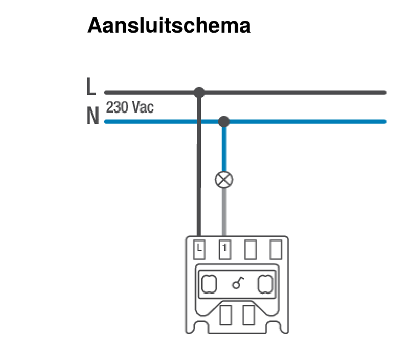
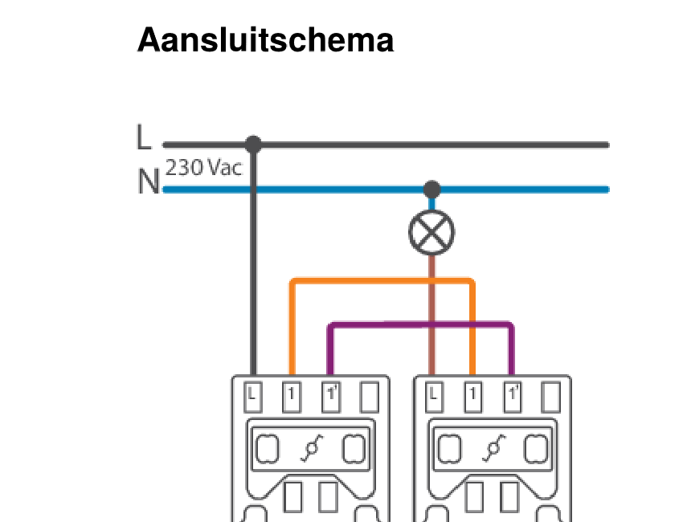
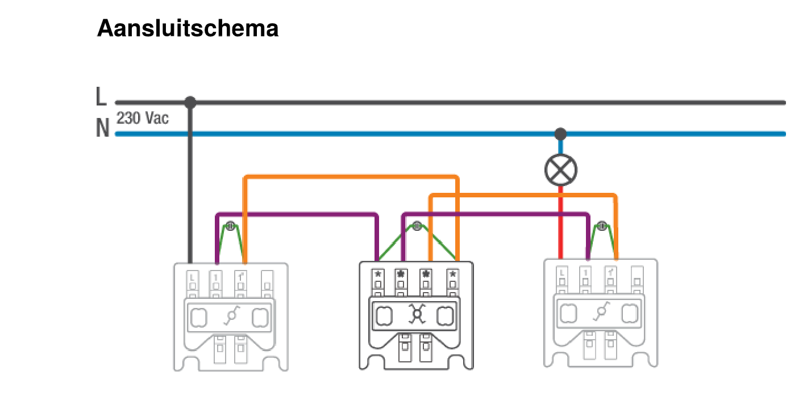

<!doctype html>
<html lang="en">

	<head>
		<meta charset="utf-8">

		<title>Elektronische installatietechnieken - Les 5 Schakelaars aansluiten</title>

		<meta name="description" content="Elektronische installatietechnieken - Les 5 Niko-schakelaars aansluiten: enkelvoudig, wissel en kruis">
		<meta name="author" content="Steven Charpentier">

		<meta name="apple-mobile-web-app-capable" content="no">
		<meta name="apple-mobile-web-app-status-bar-style" content="black-translucent">

		<meta name="viewport" content="width=device-width, initial-scale=1.0">

		<link rel="stylesheet" href="dist/reset.css">
		<link rel="stylesheet" href="dist/reveal.css">
		<link rel="stylesheet" href="dist/theme/dracula.css" id="theme">
		<link rel="stylesheet" href="APstyle.css">

		<!-- Theme used for syntax highlighting of code -->
		<link rel="stylesheet" href="plugin/highlight/monokai.css">

		<script src="https://cdn.jsdelivr.net/npm/mermaid@11/dist/mermaid.min.js"></script>
	</head>

	<body>

		<div class="reveal">
            <div class="slides">
    <section data-markdown>
  <script type="text/template">
### Schakelaars aansluiten
## Niko: enkelvoudig, wissel en kruis

---

## Voor je begint

- **Spanningsloos maken** en controleren met een spanningstester, niet enkel de automaat omzetten
- Werk op een **oefenbordje**, niet rechtstreeks in de kast
- Herbekijk eerst het **stroombaanschema** van de schakeling (zie les 3)

---

## Gereedschap

- Kruisschroevendraaier (meeste Niko-binnenwerken: schroefklemmen)
- Striptang
- Krimptang + adereindhulzen bij soepele draad

---

## Let op: productreeksen

- Niko heeft meerdere reeksen (Original, Pure, Intense,...), schroef- of insteekklemmen
- De schema's hierna zijn de **officiële aansluitschema's van Niko zelf** (niko.eu)
- Ander model? **Controleer altijd het schemaatje op de achterkant van het binnenwerk**

---

## 1. Enkelvoudige schakelaar
### Het principe

- **2 klemmen**
- Onderbreekt enkel de **fase (L)**, nooit de nulgeleider
- De nulleider gaat rechtstreeks door naar het lichtpunt

---

## Enkelvoudige schakelaar
### Klemmen

- **L**: inkomende fase, vanaf de beveiliging
- **1**: vertrekkende schakeldraad, naar de lamp

---

## Officieel aansluitschema
### Niko 170-71115



---

## Enkelvoudige schakelaar
### Stappen

1. Spanningsloos maken en controleren
2. Fasedraad op klem 1
3. Schakeldraad van klem 2 naar de lamp
4. Nulgeleider rechtstreeks naar de lamp, **buiten de schakelaar om**
5. Aardgeleider rechtstreeks doorverbinden
6. Testen

---

## 2. Wisselschakeling
### 1 lichtpunt vanaf 2 plaatsen

- **3 klemmen** per wisselschakelaar
- Eén klem voor de fase, twee "wissel"-klemmen
- Altijd **in paar** gebruikt

---

## Wisselschakeling
### Klemmen

- **L**: bij schakelaar 1, inkomende fase
- **1 en 1'**: de twee wisselcontacten, verbonden tussen de twee schakelaars
- Bij schakelaar 2: vertrekkende schakeldraad naar de lamp op de klem die overeenkomt met "L"

---

## Officieel aansluitschema
### Niko 170-71615



---

## Wisselschakeling
### Stroombaanschema


---

## Wisselschakeling
### Stappen

1. Spanningsloos maken en controleren
2. Fase op klem **L** van schakelaar 1
3. Twee wisseldraden: klem **1** naar klem **1**, klem **1'** naar klem **1'**
4. Vanaf de "L"-klem van schakelaar 2: schakeldraad naar de lamp
5. Nul en aarde rechtstreeks naar de lamp, **buiten beide schakelaars om**

---

## Wisselschakeling
### Testen

- Vanaf **beide** plaatsen de lamp aan en uit kunnen zetten
- Ongeacht de stand van de andere schakelaar

---

## 3. Kruisschakeling
### 1 lichtpunt vanaf 3 of meer plaatsen

- Bouwt verder op de wisselschakeling
- Een **kruisschakelaar** tussen de twee wisselschakelaars
- **4 klemmen**, in twee paar
- **Geen L-klem**: schakelt enkel de wisseldraden

---

## Officieel aansluitschema
### Niko 170-71715



---

## Kruisschakeling
### Klemmen van de kruisschakelaar

- Op het Niko-binnenwerk zijn de 4 klemmen **niet genummerd**, enkel een symbool: de schakelaar is **symmetrisch**
- **2 klemmen aan één kant**: de 2 wisseldraden van wisselschakelaar 1
- **2 klemmen aan de andere kant**: de 2 wisseldraden van wisselschakelaar 2
- Het maakt niet uit welke van de twee je per kant gebruikt

---

## Kruisschakeling
### Stroombaanschema


---

## Kruisschakeling
### Stappen

1. Spanningsloos maken en controleren
2. Wisselschakelaar 1 en 2 aansluiten zoals bij de wisselschakeling
3. Beide wisseldraden **via de kruisschakelaar** laten lopen, niet rechtstreeks
4. Nul en aarde rechtstreeks naar de lamp, buiten alle schakelaars om

---

## Kruisschakeling
### Meer dan 3 plaatsen?

- Extra plaats nodig? Plaats een **extra kruisschakelaar** in serie tussen de twee wisselschakelaars
- Test steeds vanaf **alle** plaatsen, in elke volgorde

---

## Bedradingslijst als controlemiddel

- Elke draad een nummer, met van/naar
- Eerst op papier correct, vóór je de schroevendraaier vastneemt
- Je referentie als er bij het testen iets niet werkt

---

## Voorbeeld: bedradingslijst


---

## Veelgemaakte fouten

- Nulgeleider via de schakelaar laten lopen in plaats van rechtstreeks: **gevaarlijk**, behuizing blijft onder spanning
- Wisseldraden en fase door elkaar halen: gebruik een herkenbare kleur
- Beide wisseldraden van dezelfde wisselschakelaar niet samen aan dezelfde kant van de kruisschakelaar: schakeling werkt niet correct vanaf alle plaatsen


  </script>
</section>
</div></div>

		<script src="dist/reveal.js"></script>
		<script src="plugin/zoom/zoom.js"></script>
		<script src="plugin/notes/notes.js"></script>
		<script src="plugin/search/search.js"></script>
		<script src="plugin/markdown/markdown.js"></script>
		<script src="plugin/highlight/highlight.js"></script>
		<script>

			// Also available as an ES module, see:
			// https://revealjs.com/initialization/
			Reveal.initialize({
				controls: true,
				progress: true,
				center: true,
				hash: true,

				// Learn about plugins: https://revealjs.com/plugins/
				plugins: [ RevealZoom, RevealNotes, RevealSearch, RevealMarkdown, RevealHighlight ]
			}).then(() => {
				mermaid.initialize({ startOnLoad: false, theme: 'base', themeVariables: {
					primaryColor: '#F7F2F2',
					primaryBorderColor: '#97000C',
					primaryTextColor: '#231F20',
					lineColor: '#68676C',
					background: '#FFFFFF'
				} });
				mermaid.run({ querySelector: '.mermaid' }).then(() => Reveal.layout());
				Reveal.addEventListener('slidechanged', () => {
					mermaid.run({ querySelector: '.mermaid' }).then(() => Reveal.layout());
				});

				// Afbeeldingen laden asynchroon in. Reveal berekent de verticale
				// centrering ("center: true") op het moment van wisselen, dus vóór
				// een afbeelding klaar is met laden. Zonder herberekening blijft de
				// slide dan gecentreerd staan op de (kleinere) hoogte zonder afbeelding,
				// waardoor de afbeelding te laag lijkt te staan. Na elke load: opnieuw layouten.
				document.querySelectorAll('.reveal img').forEach((img) => {
					if (img.complete) return;
					img.addEventListener('load', () => Reveal.layout());
				});
			});

		</script>
</body>

</html>
